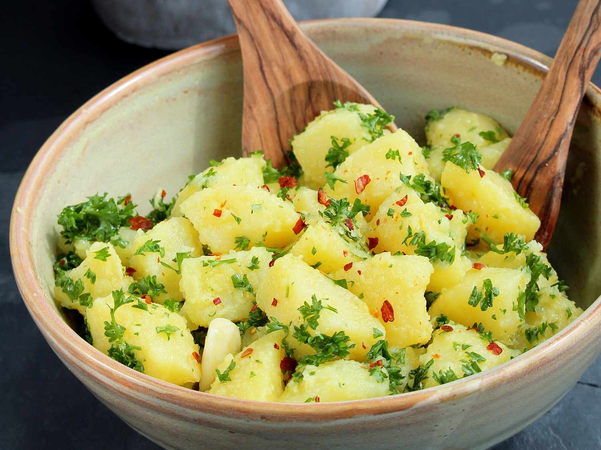

Italian potato Salad
>
Classic Italian potato salad that can be found on tables from the north to the south.
Ingredients:
- 25 ounces Yukon Gold potatoes .
- 1 tablespoon coarse sea salt .
- 4 tablespoons extra-virgin olive oil, divided .
- 1 tablespoon white wine vinegar .
- 2 cloves garlic, peeled and slightly crushed .
- 2 green onions (white part only), chopped .
- 1/2 cup very finely chopped flat-leaf parsley .
- salt and freshly ground black pepper to taste .
- 1 teaspoon red pepper flakes (Optional) .
Directions:
- Combine potatoes and salt in a large pot filled with cold water.
Bring to a boil. Cook until potatoes are tender,
but not mushy, about 10 minutes depending on size.
Drain and set aside until cool enough to handle.
- While potatoes are cooking,
whisk 3 tablespoons olive oil and white wine vinegar together in a small bowl.
Add garlic and set aside.
- Peel cooked and cooled potatoes and cut into 1-inch cubes. Combine potatoes, green onions, and parsley in a bowl and lightly toss. Season with salt and pepper. Drizzle with olive oil mixture and lightly toss, taking care not to break the potatoes.
- Top with remaining 1 tablespoon olive oil and red pepper flakes right before serving.
source